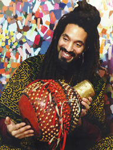
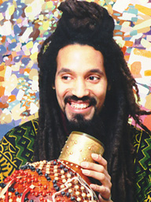
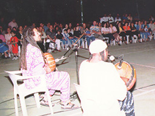

Born in 1960 Kevin Nathaniel Hylton spent his youth studying the visual and performance arts in 1978. He was admitted to Yale University where as Scholar of the House, he distinguished himself in painting. It was during that time that he studied painting with Samia A. Halaby.
After graduation, Hylton studied dance and began building musical instruments. His education was completed when he studied with master musicians such as Ephat Mujuru and Chief Bey. While he focused on the mbira and the shekere, he studied other traditional African instruments. His training covered not only playing the instruments but crafting them as well and included the study of vocal styles and dance.


 Now he devotes his full attention to music and he is in high demand performing or teaching almost every night of the week. Kevin teaches workshops for world percussion and the building and playing of traditional instruments; he is a foundingmember of the Spirit Ensemble, the Heritage Percussion Ensemble, the Kinetic Painting Group, and directs his own band -- Moment. The Spirit Ensemble is so widely respected by musicians and audiences alike that it has become a cultural institution even as it remains invisible to the mainstream press.
Kevin Nathaniel and Hasan Bakr performing to a night crowd outdoors in Aleppo during their 1997 tour of syria
Hylton approaches sound as free flowing particles, like sand, in different colors, weights and textures. He has composed for countless dance and video projects.
Some highlights in his musical career are:
Select from the following menu representing the entire studio:
="pointer-events:none;cursor:default;" href="http://www.art.net/">

![[Art on the Net]](/images/artnet_button.gif)